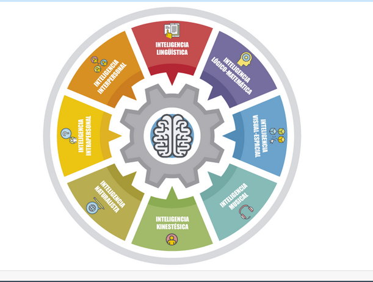

MIS DIMENSIONES
• Neurofisiología 2.
• Cognitiva e Inteligencia 4.
• Psicológica, Afectiva y Social 2.
• Moral, Ética y Valores 2.
• Profesional y Vocacional 4.

Solo le doy importancia a las dimensiones que yo considero más importantes y las demás solamente las ignoro.
MIS INTELIGENCIAS MULTIPLES

¿Que inteligencia te gustaría potenciar y por qué?
Prefiero fortalecer las inteligencias Lógico-Matemática y lingüística porque están fuertemente relacionadas con los sistemas computacionales..
MIS COMPETENCIAS DEL FUTURO
Dominio de un lenguaje de programación 2
Dominio avanzado de Linux y sus herramientas 2
Trabajar en el sector tecnológico 2

Prefiero no colocar las puntuaciones tan altas, porque el sector tecnológico constantemente evoluciona, obligando a las personas que trabajan y los que ambicionan a trabajar en este sector seguir constantemente actualizándose.